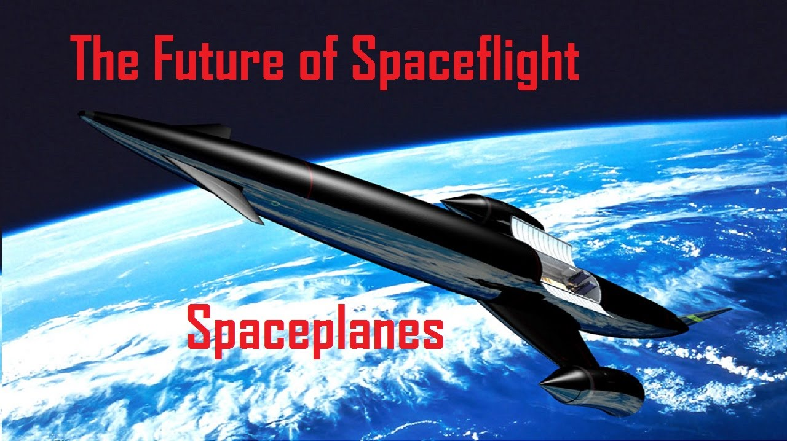
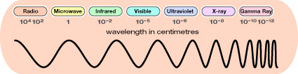
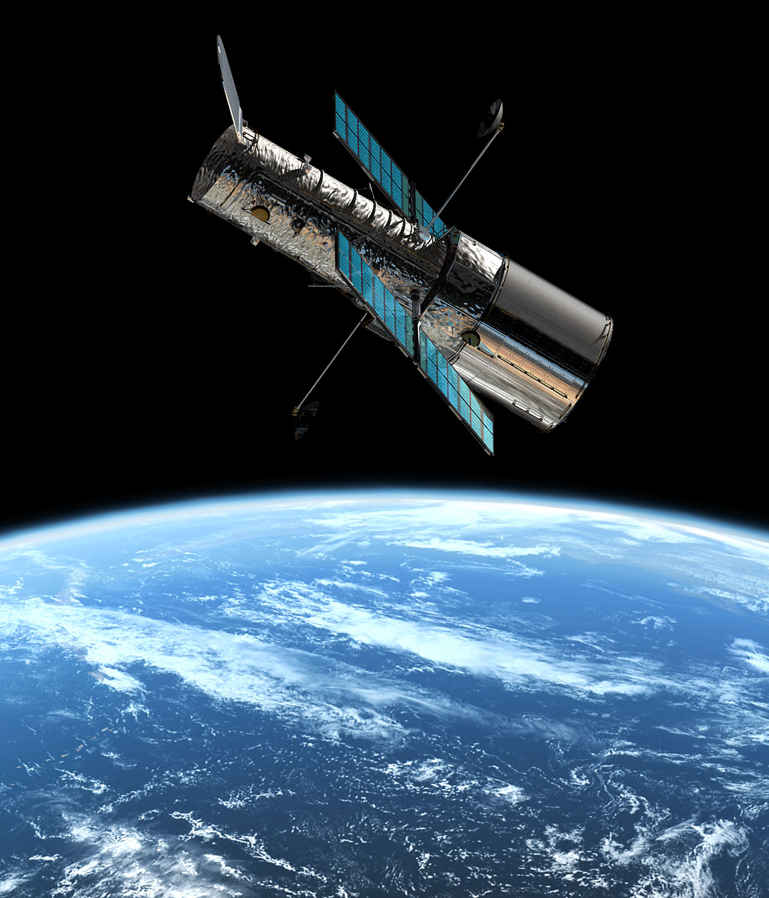

Introduction

When you look at the night sky, you might see what appears to be a black curtain with millions of tiny holes in it. Many early people thought all of the stars were the same distance from Earth, fixed on a single layer in space. When instruments were developed to see farther into space, people began to realize that their perceptions were not correct.
As technology advances, we can see further and further into space. Determining the positions of bodies in space and their distances from each other allows us to develop a fuller understanding of the universe.
Today, a mix of ancient principles and new technologies are employed to see space in the most accurate way possible.
This section explores the many technologies developed for space exploration.
Observing From Earth
Telescopes allow us to view space from the comfort of our own backyard. The first telescope was an optical telescope. Optical telescopes collect and focus visible light so that you can see a magnified image of a distant object. Optical telescopes come in a variety of sizes; from small, portable ones you could use in your backyard, to huge stationary ones in scientific observatories.
Optical telescopes are not the only kinds of telescopes available. Visible light makes up only a small portion of the radiation energy in the universe. The electromagnetic spectrum shows these different forms of energy.
Other types of telescopes use these other forms of energy to create pictures of the universe.

Observing from Space
Our view of space from Earth is not perfect. Air and light pollution, cloudy weather, and distortion from heat and atmosphere are all factors that can obscure the view of space. To get a better view, astronomers position instruments outside the Earth's atmosphere.
Some devices that astronomers use in space are satellites and probes.
A satellite is anything that orbits around something else. There are natural satellites such as our Moon, and artificial satellites such as communications devices orbiting Earth right at this moment.
Probes are devices sent, with no human pilot, to another celestial body to gather information. Sending probes into space is usually less costly than sending humans, and less dangerous. However, there is some debate as to whether a machine can gather information as well as a human being. What do you think?
The Hubble Space Telescope
Hubble, the observatory, is the first major optical telescope to be placed in space, the ultimate mountaintop. Above the distortion of the atmosphere, far far above rain clouds and light pollution, Hubble has an unobstructed view of the universe. Scientists have used Hubble to observe the most distant stars and galaxies as well as the planets in our solar system. Hubble's launch and deployment aboard the space shuttle Discovery, in April 1990, marked the most significant advance in astronomy since Galileo's telescope. Thanks to four servicing missions and more than 25 years of operation, our view of the universe and our place within it has never been the same.
Hubble is one of the most productive scientific instruments ever built. Hubble does not travel to stars, planets or galaxies. It takes pictures of them as it whirls around Earth at about 17 000 mph. Hubble has travelled more than 4 billion miles along a circular low Earth orbit currently about 340 miles in altitude. Hubble has peered back into the very distant past, to locations more than 13.4 billion light years from Earth. Hubble weighed about 24 000 pounds at launch and currently weighs about 27 000 pounds following the final servicing mission in 2009 – on the order of two full-grown African elephants. Hubble's primary mirror is 2.4 meters (7 feet, 10.5 inches) across. Hubble is 13.3 meters (43.5 feet) long -- the length of a large school bus.

Spaceplanes
A spaceplane is an aerospace vehicle that operates as an aircraft in Earth's atmosphere, as well as a spacecraft when it is in space. It combines features of an aircraft and a spacecraft, which can be thought of as an aircraft that can endure and maneuver in the vacuum of space or likewise a spacecraft that can fly like an airplane. Typically, it takes the form of a spacecraft equipped with wings, although lifting bodies have been designed and tested as well. The propulsion to reach space may be purely rocket based or may use the assistance of airbreathing jet engines. The spaceflight is then followed by an unpowered glide return to landing.
Video
The International Space Station
The International Space Station (ISS) is the most complex international scientific and engineering project in history and the largest structure humans have ever put into space. This high-flying satellite is a laboratory for new technologies and an observation platform for astronomical, environmental and geological research. As a permanently occupied outpost in outer space, it serves as a stepping-stone for further space exploration. The space station flies at an average altitude of 400 kilometres above Earth. It circles the globe every 90 minutes at a speed of about 28 000 kph. In one day, the station travels about the distance it would take to go from Earth to the moon and back. The space station can rival the brilliant planet, Venus, in brightness and appears as a bright moving light across the night sky. It can be seen from Earth without the use of a telescope by night sky observers who know when and where to look.
Video
Five different space agencies representing 15 countries built the $100-billion International Space Station and continue to operate it today. NASA, Russia's Roscosmos State Corporation for Space Activities (Roscosmos), the European Space Agency, the Canadian Space Agency and the Japan Aerospace Exploration Agency is the primary space agency partners on the project.
Cassini Spacecraft & Exploration of Saturn
NASA's Cassini spacecraft successfully completed its historic mission on September 15, 2017, after carrying out an unprecedented series of 22 dives between the planet Saturn and its rings—a region no other spacecraft had ever explored.
During its Grand Finale, Cassini transmitted invaluable science and engineering data back to Earth via NASA’s Deep Space Network, greatly enhancing our understanding of Saturn's structure, ring system, and magnetic environment. The mission, which lasted nearly 20 years, included a final close flyby of Saturn’s moon Titan before embarking on its daring final orbits.
The legacy of the Cassini mission continues to inform studies of giant planets and planetary formation, providing insights that help scientists understand how planetary systems across the universe evolve.
Video
Curiosity Rover & Exploration of Mars
Curiosity is a car-sized robotic rover exploring Gale Crater on Mars as part of NASA's Mars Science Laboratory mission. Curiosity was launched from Cape Canaveral on November 26, 2011, aboard the MSL spacecraft and landed on Aeolis Palus in Gale Crater on Mars on August 6, 2012. The Bradbury Landing site was less than 2.4 km from the center of the rover's touchdown target after a 560 million km journey. The rover's goals include investigation of the Martian climate and geology; assessment of whether the selected field site inside Gale Crater has ever offered environmental conditions favourable for microbial life, including investigation of the role of water; and planetary habitability studies in preparation for future human exploration.
Video
Parker Solar Probe
NASA’s Parker Solar Probe will be the first-ever mission to "touch" the Sun. The spacecraft, about the size of a small car, will travel directly into the sun's atmosphere about 4 million miles from our star's surface. It was named after Eugene Parker who discovered 'solar wind'. The launch of this unprecedented mission was on August 12, 2018.
NASA's Parker Solar Probe has recently achieved significant milestones in its mission to study the Sun up close.
On December 24, 2024, the probe made its closest approach to the Sun to date, coming within approximately 3.8 million miles (6.1 million kilometers) of the solar surface. During this perihelion, it reached a record-breaking speed of about 430,000 miles per hour (692,000 kilometers per hour)(The Hub)
Following this close encounter, the Parker Solar Probe successfully transmitted detailed telemetry data back to Earth, confirming that all systems and instruments are healthy and operating normally.(Space.com)
These achievements mark a significant advancement in our understanding of solar phenomena, as the data collected will provide unprecedented insights into the Sun's behavior and its influence on the solar system.